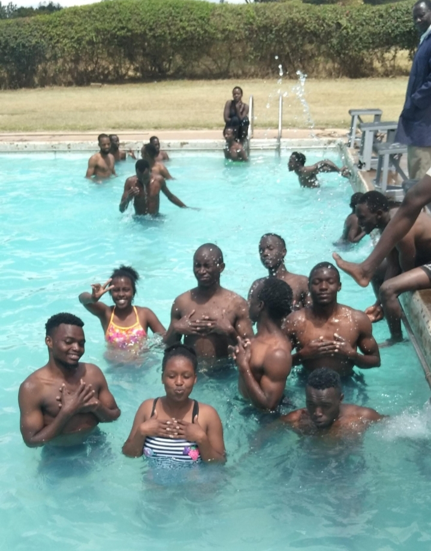
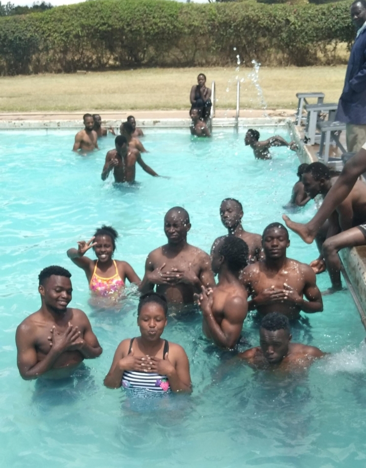
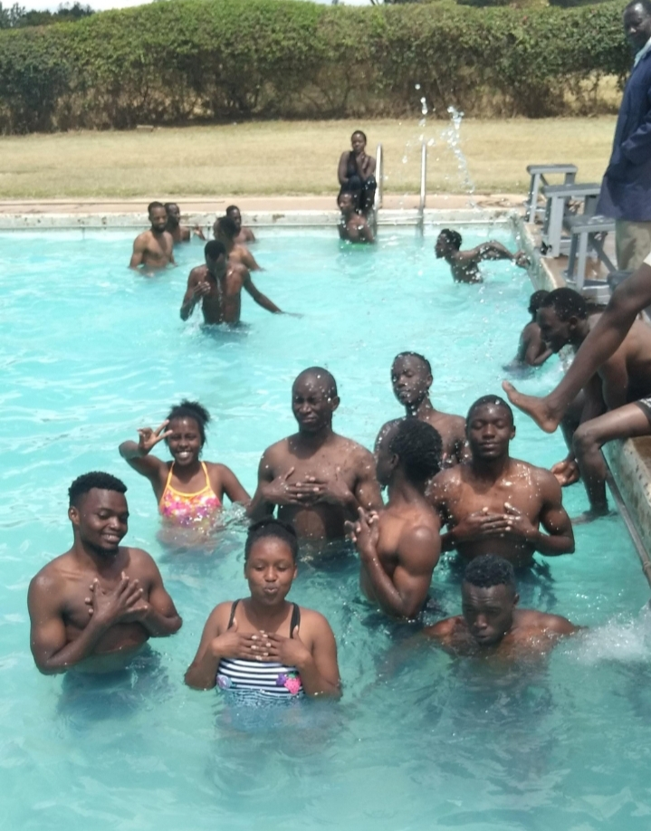
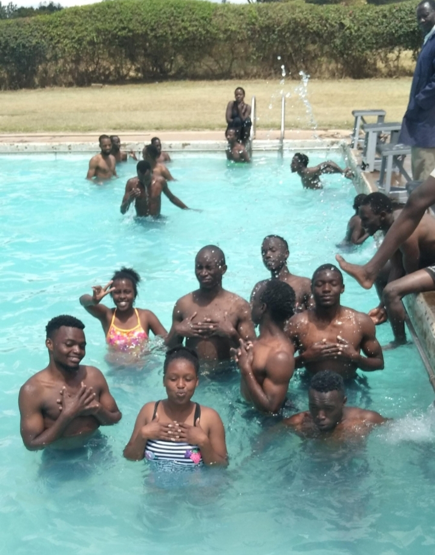

 

Our professional photographers can capture the action and emotion of your rugby matches and events. We offer both individual and team photo shoots, and can also provide prints and digital copies
We can create high-quality videos of your rugby matches and events, including highlights, interviews, and behind-the-scenes footage. Our videographers use the latest equipment and techniques to ensure stunning results.
We can create high-quality videos of your rugby matches and events, including highlights, interviews, and behind-the-scenes footage. Our videographers use the latest equipment and techniques to ensure stunning results.